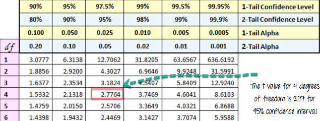
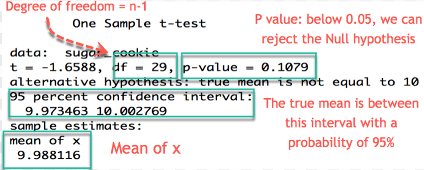
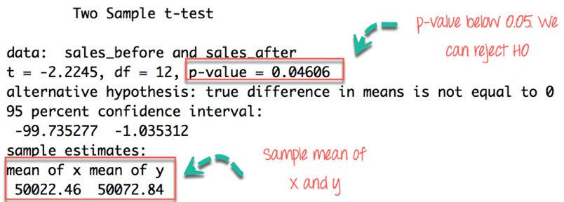

<!DOCTYPE html>

<html>

<head>

<meta charset="utf-8" />
<meta name="generator" content="pandoc" />
<meta http-equiv="X-UA-Compatible" content="IE=EDGE" />


<title>Lesson 21</title>

<script src="site_libs/jquery-1.11.3/jquery.min.js"></script>
<meta name="viewport" content="width=device-width, initial-scale=1" />
<link href="site_libs/bootstrap-3.3.5/css/flatly.min.css" rel="stylesheet" />
<script src="site_libs/bootstrap-3.3.5/js/bootstrap.min.js"></script>
<script src="site_libs/bootstrap-3.3.5/shim/html5shiv.min.js"></script>
<script src="site_libs/bootstrap-3.3.5/shim/respond.min.js"></script>
<script src="site_libs/jqueryui-1.11.4/jquery-ui.min.js"></script>
<link href="site_libs/tocify-1.9.1/jquery.tocify.css" rel="stylesheet" />
<script src="site_libs/tocify-1.9.1/jquery.tocify.js"></script>
<script src="site_libs/navigation-1.1/tabsets.js"></script>
<link href="site_libs/font-awesome-5.1.0/css/all.css" rel="stylesheet" />
<link href="site_libs/font-awesome-5.1.0/css/v4-shims.css" rel="stylesheet" />
<!DOCTYPE html PUBLIC "-//W3C//DTD HTML 4.01//EN" "http://www.w3.org/TR/html4/strict.dtd">
<html>
<head>
  <meta http-equiv="Content-Type" content="text/html; charset=utf-8">
  <meta http-equiv="Content-Style-Type" content="text/css">
  <title></title>
  <meta name="Generator" content="Cocoa HTML Writer">
  <meta name="CocoaVersion" content="1504">
  <!-- this script changes the anchor position -->
  <!-- http://jsfiddle.net/ianclark001/rkocah23/ -->
<script>
(function(document, history, location) {
  var HISTORY_SUPPORT = !!(history && history.pushState);

  var anchorScrolls = {
    ANCHOR_REGEX: /^#[^ ]+$/,
    OFFSET_HEIGHT_PX: 65,

    /**
     * Establish events, and fix initial scroll position if a hash is provided.
     */
    init: function() {
      this.scrollToCurrent();
      $(window).on('hashchange', $.proxy(this, 'scrollToCurrent'));
      $('body').on('click', 'a', $.proxy(this, 'delegateAnchors'));
    },

    /**
     * Return the offset amount to deduct from the normal scroll position.
     * Modify as appropriate to allow for dynamic calculations
     */
    getFixedOffset: function() {
      return this.OFFSET_HEIGHT_PX;
    },

    /**
     * If the provided href is an anchor which resolves to an element on the
     * page, scroll to it.
     * @param  {String} href
     * @return {Boolean} - Was the href an anchor.
     */
    scrollIfAnchor: function(href, pushToHistory) {
      var match, anchorOffset;

      if(!this.ANCHOR_REGEX.test(href)) {
        return false;
      }

      match = document.getElementById(href.slice(1));

      if(match) {
        anchorOffset = $(match).offset().top - this.getFixedOffset();
        $('html, body').animate({ scrollTop: anchorOffset});

        // Add the state to history as-per normal anchor links
        if(HISTORY_SUPPORT && pushToHistory) {
          history.pushState({}, document.title, location.pathname + href);
        }
      }

      return !!match;
    },
    
    /**
     * Attempt to scroll to the current location's hash.
     */
    scrollToCurrent: function(e) {
      if(this.scrollIfAnchor(window.location.hash) && e) {
        e.preventDefault();
      }
    },

    /**
     * If the click event's target was an anchor, fix the scroll position.
     */
    delegateAnchors: function(e) {
      var elem = e.target;

      if(this.scrollIfAnchor(elem.getAttribute('href'), true)) {
        e.preventDefault();
      }
    }
  };

    $(document).ready($.proxy(anchorScrolls, 'init'));
})(window.document, window.history, window.location);
</script>

</head>
<body>
</body>
</html>


<style type="text/css">code{white-space: pre;}</style>
<style type="text/css" data-origin="pandoc">
a.sourceLine { display: inline-block; line-height: 1.25; }
a.sourceLine { pointer-events: none; color: inherit; text-decoration: inherit; }
a.sourceLine:empty { height: 1.2em; }
.sourceCode { overflow: visible; }
code.sourceCode { white-space: pre; position: relative; }
div.sourceCode { margin: 1em 0; }
pre.sourceCode { margin: 0; }
@media screen {
div.sourceCode { overflow: auto; }
}
@media print {
code.sourceCode { white-space: pre-wrap; }
a.sourceLine { text-indent: -1em; padding-left: 1em; }
}
pre.numberSource a.sourceLine
  { position: relative; left: -4em; }
pre.numberSource a.sourceLine::before
  { content: attr(data-line-number);
    position: relative; left: -1em; text-align: right; vertical-align: baseline;
    border: none; pointer-events: all; display: inline-block;
    -webkit-touch-callout: none; -webkit-user-select: none;
    -khtml-user-select: none; -moz-user-select: none;
    -ms-user-select: none; user-select: none;
    padding: 0 4px; width: 4em;
    color: #aaaaaa;
  }
pre.numberSource { margin-left: 3em; border-left: 1px solid #aaaaaa;  padding-left: 4px; }
div.sourceCode
  {  }
@media screen {
a.sourceLine::before { text-decoration: underline; }
}
code span.al { color: #ff0000; font-weight: bold; } /* Alert */
code span.an { color: #60a0b0; font-weight: bold; font-style: italic; } /* Annotation */
code span.at { color: #7d9029; } /* Attribute */
code span.bn { color: #40a070; } /* BaseN */
code span.bu { } /* BuiltIn */
code span.cf { color: #007020; font-weight: bold; } /* ControlFlow */
code span.ch { color: #4070a0; } /* Char */
code span.cn { color: #880000; } /* Constant */
code span.co { color: #60a0b0; font-style: italic; } /* Comment */
code span.cv { color: #60a0b0; font-weight: bold; font-style: italic; } /* CommentVar */
code span.do { color: #ba2121; font-style: italic; } /* Documentation */
code span.dt { color: #902000; } /* DataType */
code span.dv { color: #40a070; } /* DecVal */
code span.er { color: #ff0000; font-weight: bold; } /* Error */
code span.ex { } /* Extension */
code span.fl { color: #40a070; } /* Float */
code span.fu { color: #06287e; } /* Function */
code span.im { } /* Import */
code span.in { color: #60a0b0; font-weight: bold; font-style: italic; } /* Information */
code span.kw { color: #007020; font-weight: bold; } /* Keyword */
code span.op { color: #666666; } /* Operator */
code span.ot { color: #007020; } /* Other */
code span.pp { color: #bc7a00; } /* Preprocessor */
code span.sc { color: #4070a0; } /* SpecialChar */
code span.ss { color: #bb6688; } /* SpecialString */
code span.st { color: #4070a0; } /* String */
code span.va { color: #19177c; } /* Variable */
code span.vs { color: #4070a0; } /* VerbatimString */
code span.wa { color: #60a0b0; font-weight: bold; font-style: italic; } /* Warning */

</style>
<script>
// apply pandoc div.sourceCode style to pre.sourceCode instead
(function() {
  var sheets = document.styleSheets;
  for (var i = 0; i < sheets.length; i++) {
    if (sheets[i].ownerNode.dataset["origin"] !== "pandoc") continue;
    try { var rules = sheets[i].cssRules; } catch (e) { continue; }
    for (var j = 0; j < rules.length; j++) {
      var rule = rules[j];
      // check if there is a div.sourceCode rule
      if (rule.type !== rule.STYLE_RULE || rule.selectorText !== "div.sourceCode") continue;
      var style = rule.style.cssText;
      // check if color or background-color is set
      if (rule.style.color === '' && rule.style.backgroundColor === '') continue;
      // replace div.sourceCode by a pre.sourceCode rule
      sheets[i].deleteRule(j);
      sheets[i].insertRule('pre.sourceCode{' + style + '}', j);
    }
  }
})();
</script>
<style type="text/css">
  pre:not([class]) {
    background-color: white;
  }
</style>


<style type="text/css">
h1 {
  font-size: 34px;
}
h1.title {
  font-size: 38px;
}
h2 {
  font-size: 30px;
}
h3 {
  font-size: 24px;
}
h4 {
  font-size: 18px;
}
h5 {
  font-size: 16px;
}
h6 {
  font-size: 12px;
}
.table th:not([align]) {
  text-align: left;
}
</style>

<link rel="stylesheet" href="style.css" type="text/css" />


<style type = "text/css">
.main-container {
  max-width: 940px;
  margin-left: auto;
  margin-right: auto;
}
code {
  color: inherit;
  background-color: rgba(0, 0, 0, 0.04);
}
img {
  max-width:100%;
}
.tabbed-pane {
  padding-top: 12px;
}
.html-widget {
  margin-bottom: 20px;
}
button.code-folding-btn:focus {
  outline: none;
}
summary {
  display: list-item;
}
</style>


<style type="text/css">
/* padding for bootstrap navbar */
body {
  padding-top: 60px;
  padding-bottom: 40px;
}
/* offset scroll position for anchor links (for fixed navbar)  */
.section h1 {
  padding-top: 65px;
  margin-top: -65px;
}
.section h2 {
  padding-top: 65px;
  margin-top: -65px;
}
.section h3 {
  padding-top: 65px;
  margin-top: -65px;
}
.section h4 {
  padding-top: 65px;
  margin-top: -65px;
}
.section h5 {
  padding-top: 65px;
  margin-top: -65px;
}
.section h6 {
  padding-top: 65px;
  margin-top: -65px;
}
.dropdown-submenu {
  position: relative;
}
.dropdown-submenu>.dropdown-menu {
  top: 0;
  left: 100%;
  margin-top: -6px;
  margin-left: -1px;
  border-radius: 0 6px 6px 6px;
}
.dropdown-submenu:hover>.dropdown-menu {
  display: block;
}
.dropdown-submenu>a:after {
  display: block;
  content: " ";
  float: right;
  width: 0;
  height: 0;
  border-color: transparent;
  border-style: solid;
  border-width: 5px 0 5px 5px;
  border-left-color: #cccccc;
  margin-top: 5px;
  margin-right: -10px;
}
.dropdown-submenu:hover>a:after {
  border-left-color: #ffffff;
}
.dropdown-submenu.pull-left {
  float: none;
}
.dropdown-submenu.pull-left>.dropdown-menu {
  left: -100%;
  margin-left: 10px;
  border-radius: 6px 0 6px 6px;
}
</style>

<script>
// manage active state of menu based on current page
$(document).ready(function () {
  // active menu anchor
  href = window.location.pathname
  href = href.substr(href.lastIndexOf('/') + 1)
  if (href === "")
    href = "index.html";
  var menuAnchor = $('a[href="' + href + '"]');

  // mark it active
  menuAnchor.parent().addClass('active');

  // if it's got a parent navbar menu mark it active as well
  menuAnchor.closest('li.dropdown').addClass('active');
});
</script>

<!-- tabsets -->

<style type="text/css">
.tabset-dropdown > .nav-tabs {
  display: inline-table;
  max-height: 500px;
  min-height: 44px;
  overflow-y: auto;
  background: white;
  border: 1px solid #ddd;
  border-radius: 4px;
}

.tabset-dropdown > .nav-tabs > li.active:before {
  content: "";
  font-family: 'Glyphicons Halflings';
  display: inline-block;
  padding: 10px;
  border-right: 1px solid #ddd;
}

.tabset-dropdown > .nav-tabs.nav-tabs-open > li.active:before {
  content: "&#xe258;";
  border: none;
}

.tabset-dropdown > .nav-tabs.nav-tabs-open:before {
  content: "";
  font-family: 'Glyphicons Halflings';
  display: inline-block;
  padding: 10px;
  border-right: 1px solid #ddd;
}

.tabset-dropdown > .nav-tabs > li.active {
  display: block;
}

.tabset-dropdown > .nav-tabs > li > a,
.tabset-dropdown > .nav-tabs > li > a:focus,
.tabset-dropdown > .nav-tabs > li > a:hover {
  border: none;
  display: inline-block;
  border-radius: 4px;
  background-color: transparent;
}

.tabset-dropdown > .nav-tabs.nav-tabs-open > li {
  display: block;
  float: none;
}

.tabset-dropdown > .nav-tabs > li {
  display: none;
}
</style>

<!-- code folding -->


<style type="text/css">

#TOC {
  margin: 25px 0px 20px 0px;
}
@media (max-width: 768px) {
#TOC {
  position: relative;
  width: 100%;
}
}

@media print {
.toc-content {
  /* see https://github.com/w3c/csswg-drafts/issues/4434 */
  float: right;
}
}

.toc-content {
  padding-left: 30px;
  padding-right: 40px;
}

div.main-container {
  max-width: 1200px;
}

div.tocify {
  width: 20%;
  max-width: 260px;
  max-height: 85%;
}

@media (min-width: 768px) and (max-width: 991px) {
  div.tocify {
    width: 25%;
  }
}

@media (max-width: 767px) {
  div.tocify {
    width: 100%;
    max-width: none;
  }
}

.tocify ul, .tocify li {
  line-height: 20px;
}

.tocify-subheader .tocify-item {
  font-size: 0.90em;
}

.tocify .list-group-item {
  border-radius: 0px;
}


</style>


</head>

<body>


<div class="container-fluid main-container">


<!-- setup 3col/9col grid for toc_float and main content  -->
<div class="row-fluid">
<div class="col-xs-12 col-sm-4 col-md-3">
<div id="TOC" class="tocify">
</div>
</div>

<div class="toc-content col-xs-12 col-sm-8 col-md-9">


<div class="navbar navbar-default  navbar-fixed-top" role="navigation">
  <div class="container">
    <div class="navbar-header">
      <button type="button" class="navbar-toggle collapsed" data-toggle="collapse" data-target="#navbar">
        <span class="icon-bar"></span>
        <span class="icon-bar"></span>
        <span class="icon-bar"></span>
      </button>
      <a class="navbar-brand" href="index.html">An R Tutorial for Beginners</a>
    </div>
    <div id="navbar" class="navbar-collapse collapse">
      <ul class="nav navbar-nav">
        <li>
  <a href="index.html">
    <span class="fa fa-home"></span>
     
    Home
  </a>
</li>
<li>
  <a href="about.html">
    <span class="fa fa-info-circle"></span>
     
    About
  </a>
</li>
<li class="dropdown">
  <a href="#" class="dropdown-toggle" data-toggle="dropdown" role="button" aria-expanded="false">
    <span class="fa fa-bars"></span>
     
    Lessons
     
    <span class="caret"></span>
  </a>
  <ul class="dropdown-menu" role="menu">
    <li class="dropdown-submenu">
      <a href="#" class="dropdown-toggle" data-toggle="dropdown" role="button" aria-expanded="false">Introduction</a>
      <ul class="dropdown-menu" role="menu">
        <li>
          <a href="R-course_lesson-1.html">Lesson 1</a>
        </li>
        <li>
          <a href="R-course_lesson-2.html">Lesson 2</a>
        </li>
        <li>
          <a href="R-course_lesson-3.html">Lesson 3</a>
        </li>
        <li>
          <a href="R-course_lesson-4.html">Lesson 4</a>
        </li>
      </ul>
    </li>
    <li class="dropdown-submenu">
      <a href="#" class="dropdown-toggle" data-toggle="dropdown" role="button" aria-expanded="false">Data Preparation</a>
      <ul class="dropdown-menu" role="menu">
        <li>
          <a href="R-course_lesson-5.html">Lesson 5</a>
        </li>
        <li>
          <a href="R-course_lesson-6.html">Lesson 6</a>
        </li>
        <li>
          <a href="R-course_lesson-7.html">Lesson 7</a>
        </li>
        <li>
          <a href="R-course_lesson-8.html">Lesson 8</a>
        </li>
        <li>
          <a href="R-course_lesson-9.html">Lesson 9</a>
        </li>
      </ul>
    </li>
    <li class="dropdown-submenu">
      <a href="#" class="dropdown-toggle" data-toggle="dropdown" role="button" aria-expanded="false">Programming</a>
      <ul class="dropdown-menu" role="menu">
        <li>
          <a href="R-course_lesson-10.html">Lesson 10</a>
        </li>
        <li>
          <a href="R-course_lesson-11.html">Lesson 11</a>
        </li>
        <li>
          <a href="R-course_lesson-12.html">Lesson 12</a>
        </li>
        <li>
          <a href="R-course_lesson-13.html">Lesson 13</a>
        </li>
        <li>
          <a href="R-course_lesson-14.html">Lesson 14</a>
        </li>
        <li>
          <a href="R-course_lesson-15.html">Lesson 15</a>
        </li>
        <li>
          <a href="R-course_lesson-16.html">Lesson 16</a>
        </li>
        <li>
          <a href="R-course_lesson-17.html">Lesson 17</a>
        </li>
      </ul>
    </li>
    <li class="dropdown-submenu">
      <a href="#" class="dropdown-toggle" data-toggle="dropdown" role="button" aria-expanded="false">Data Analysis</a>
      <ul class="dropdown-menu" role="menu">
        <li>
          <a href="R-course_lesson-18.html">Lesson 18</a>
        </li>
        <li>
          <a href="R-course_lesson-19.html">Lesson 19</a>
        </li>
        <li>
          <a href="R-course_lesson-20.html">Lesson 20</a>
        </li>
        <li>
          <a href="R-course_lesson-21.html">Lesson 21</a>
        </li>
      </ul>
    </li>
  </ul>
</li>
      </ul>
      <ul class="nav navbar-nav navbar-right">
        
      </ul>
    </div><!--/.nav-collapse -->
  </div><!--/.container -->
</div><!--/.navbar -->

<div class="fluid-row" id="header">


<h1 class="title toc-ignore">T Test in R: One Sample and Paired (with Example)</h1>

</div>


<div id="what-is-statistical-inference" class="section level1">
<h1>What is Statistical Inference?</h1>
<p>Stastitical inference is the art of generating conclusions about the distribution of the data. A data scientist is often exposed to question that can only be answered scientifically. Therefore, statistical inference is a strategy to test whether a hypothesis is true, i.e. validated by the data.</p>
<p>A common strategy to assess hypothesis is to conduct a t-test. A t-test can tell whether two groups have the same mean. A t-test is also called a <strong>Student Test</strong>. A t-test can be estimated for:</p>
<ul>
<li>A single vector (i.e., one-sample t-test)</li>
<li>Two vectors from the same sample group (i.e., paired t-test).</li>
</ul>
<p>You assume that both vectors are randomly sampled, independent and come from a normally distributed population with unknown but equal variances.</p>
</div>
<div id="what-is-t-test" class="section level1">
<h1>What is t-test?</h1>
<p>The basic idea behind a t-test is to use statistic to evaluate two contrary hypotheses:</p>
<ul>
<li>H0: NULL hypothesis: The average is the same as the sample used</li>
<li>H1: True hypothesis: The average is different from the sample used</li>
</ul>
<p>The t-test is commonly used with small sample sizes. To perform a t-test, you need to assume normality of the data. The basic syntax for <code>t.test()</code> is:</p>
<div class="sourceCode" id="cb1"><pre class="sourceCode r"><code class="sourceCode r"><a class="sourceLine" id="cb1-1" data-line-number="1"><span class="kw">t.test</span>(x, <span class="dt">y =</span> <span class="ot">NULL</span>, <span class="dt">mu =</span> <span class="dv">0</span>, <span class="dt">var.equal =</span> <span class="ot">FALSE</span>)</a></code></pre></div>
<p><strong>arguments:</strong></p>
<ul>
<li>x : A vector to compute the one-sample t-test</li>
<li>y: A second vector to compute the two sample t-test</li>
<li>mu: Mean of the population- var.equal: Specify if the variance of the two vectors are equal. By default, set to <code>FALSE</code></li>
</ul>
</div>
<div id="one-sample-t-test" class="section level1">
<h1>One-sample t-test</h1>
<p>The t-test, or student’s test, compares the mean of a vector against a theoretical mean, . The formula used to compute the t-test is:</p>
<p><span class="math display">\[t = \frac{m - \mu}{\frac{s}{\sqrt{n}}}\]</span></p>
<p>Here</p>
<ul>
<li><span class="math inline">\(m\)</span> refers to the mean</li>
<li><span class="math inline">\(\mu\)</span> to the theoretical mean</li>
<li><span class="math inline">\(s\)</span> is the standard deviation</li>
<li><span class="math inline">\(n\)</span> the number of observations.</li>
</ul>
<p>To evaluate the statistical significance of the t-test, you need to compute the <strong>p-value</strong>. The <strong>p-value</strong> ranges from 0 to 1, and is interpreted as follow:</p>
<ul>
<li>A p-value lower than 0.05 means you are strongly confident to reject the null hypothesis, thus H1 is accepted.</li>
<li>A p-value higher than 0.05 indicates that you don’t have enough evidences to reject the null hypothesis.</li>
</ul>
<p>You can construct the pvalue by looking at the corresponding absolute value of the t-test in the Student distribution with a degrees of freedom equals to <span class="math inline">\(df = n - 1\)</span></p>
<p>For instance, if you have 5 observations, you need to compare our t-value with the t-value in the Student distribution with 4 degrees of freedom and at 95 percent confidence interval. To reject the null hypothesesis, the t-value should be higher than 2.77.</p>
<p>Cf table below:</p>
<p align="center">

</p>
<p><strong>Example:</strong></p>
<p>Suppose you are a company producing cookies. Each cookie is supposed to contain 10 grams of sugar. The cookies are produced by a machine that adds the sugar in a bowl before mixing everything. You believe the machine does not add 10 grams of sugar for each cookie. If your assumption is true, the machine needs to be fixed. You stored the level of sugar of thirty cookies.</p>
<p>Note: You can create a randomized vector with the function rnorm(). This function generates normally distributed values. The basic syntax is:</p>
<div class="sourceCode" id="cb2"><pre class="sourceCode r"><code class="sourceCode r"><a class="sourceLine" id="cb2-1" data-line-number="1"><span class="kw">rnorm</span>(n, mean, sd)</a></code></pre></div>
<p><strong>arguments</strong></p>
<ul>
<li>n: Number of observations to generate</li>
<li>mean: The mean of the distribution. Optional</li>
<li>sd: The standard deviation of the distribution. Optional You can create a distribution with 30 observations with a mean of 9.99 and a standard deviation of 0.04.</li>
</ul>
<div class="sourceCode" id="cb3"><pre class="sourceCode r"><code class="sourceCode r"><a class="sourceLine" id="cb3-1" data-line-number="1"><span class="kw">set.seed</span>(<span class="dv">123</span>) </a>
<a class="sourceLine" id="cb3-2" data-line-number="2">sugar_cookie &lt;-<span class="st"> </span><span class="kw">rnorm</span>(<span class="dv">30</span>, <span class="dt">mean =</span> <span class="fl">9.99</span>, <span class="dt">sd =</span> <span class="fl">0.04</span>)</a>
<a class="sourceLine" id="cb3-3" data-line-number="3"><span class="kw">head</span>(sugar_cookie)</a></code></pre></div>
<pre><code>## [1]  9.967581  9.980793 10.052348  9.992820  9.995172 10.058603</code></pre>
<p>You can use a one-sample t-test to check whether the level of sugar is different than the recipe. You can draw a hypothesis test:</p>
<ul>
<li>H0: The average level of sugar is equal to 10</li>
<li>H1: The average level of sugar is different than 10</li>
</ul>
<p>You use a significance level of 0.05.</p>
<div class="sourceCode" id="cb5"><pre class="sourceCode r"><code class="sourceCode r"><a class="sourceLine" id="cb5-1" data-line-number="1"><span class="co"># H0 : mu = 10</span></a>
<a class="sourceLine" id="cb5-2" data-line-number="2"><span class="kw">t.test</span>(sugar_cookie, <span class="dt">mu =</span> <span class="dv">10</span>)   </a></code></pre></div>
<p align="center">

</p>
<p>The p-value of the one sample t-test is 0.1079 and above 0.05. You can be confident at 95% that the amount of sugar added by the machine is between 9.973 and 10.002 grams. You cannot reject the null (H0) hypothesis. There is not enough evidence that amount of sugar added by the machine does not follow the recipe.</p>
</div>
<div id="paired-t-test" class="section level1">
<h1>Paired t-test</h1>
<p>The paired t-test, or dependant sample t-test, is used when the mean of the treated group is computed twice. The basic application of the paired t-test is:</p>
<ul>
<li>A/B testing: Compare two variants</li>
<li>Case control studies: Before/after treatment</li>
</ul>
<p><strong>Example:</strong></p>
<p>A beverage company is interested in knowing the performance of a discount program on the sales. The company decided to follow the daily sales of one of its shops where the program is being promoted. At the end of the program, the company wants to know if there is a statistical difference between the average sales of the shop before and after the program.</p>
<p>The company tracked the sales everyday before the program started. This is our first vector. The program is promoted for one week and the sales are recorded every day. This is our second vector. You will perform the t-test to judge the effectiveness of the program. This is called a paired t-test because the values of both vectors come from the same distribution (i.e., the same shop). The hypothesis testing is:</p>
<ul>
<li>H0: No difference in mean</li>
<li>H1: The two means are different</li>
</ul>
<p>Remember, one assumption in the t-test is an unknown but equal variance. In reality, the data barely have equal mean, and it leads to incorrect results for the t-test.</p>
<p>One solution to relax the equal variance assumption is to use the Welch’s test. R assumes the two variances are not equal by default. In your dataset, both vectors have the same variance, you can set var.equal= TRUE.</p>
<p>You create two random vectors from a Gaussian distribution with a higher mean for the sales after the program.</p>
<div class="sourceCode" id="cb6"><pre class="sourceCode r"><code class="sourceCode r"><a class="sourceLine" id="cb6-1" data-line-number="1"><span class="kw">set.seed</span>(<span class="dv">123</span>)</a>
<a class="sourceLine" id="cb6-2" data-line-number="2"><span class="co"># sales before the program</span></a>
<a class="sourceLine" id="cb6-3" data-line-number="3">sales_before &lt;-<span class="st"> </span><span class="kw">rnorm</span>(<span class="dv">7</span>, <span class="dt">mean =</span> <span class="dv">50000</span>, <span class="dt">sd =</span> <span class="dv">50</span>)</a>
<a class="sourceLine" id="cb6-4" data-line-number="4"><span class="co"># sales after the program.This has higher mean</span></a>
<a class="sourceLine" id="cb6-5" data-line-number="5">sales_after &lt;-<span class="st"> </span><span class="kw">rnorm</span>(<span class="dv">7</span>, <span class="dt">mean =</span> <span class="dv">50075</span>, <span class="dt">sd =</span> <span class="dv">50</span>)</a>
<a class="sourceLine" id="cb6-6" data-line-number="6"><span class="co"># draw the distribution</span></a>
<a class="sourceLine" id="cb6-7" data-line-number="7"><span class="kw">t.test</span>(sales_before, sales_after,<span class="dt">var.equal =</span> <span class="ot">TRUE</span>)</a></code></pre></div>
<p align="center">

</p>
<p>You obtained a p-value of 0.04606, lower than the threshold of 0.05. You conclude the averages of the two groups are significantly different. The program improves the sales of shops.</p>
</div>
<div id="summary" class="section level1">
<h1>Summary</h1>
<p>The t-test belongs to the family of inferential statistics. It is commonly employed to find out if there is a statistical difference between the means of two groups.</p>
<p>We can summarize the t-test is the table below:</p>
<table>
<colgroup>
<col width="10%" />
<col width="33%" />
<col width="15%" />
<col width="10%" />
<col width="31%" />
</colgroup>
<thead>
<tr class="header">
<th align="left">test</th>
<th align="left">Hypothesis to test</th>
<th align="left">p-value</th>
<th align="left">code</th>
<th align="left">optional argument</th>
</tr>
</thead>
<tbody>
<tr class="odd">
<td align="left">one-sample t-test</td>
<td align="left">Mean of a vector is different from the theoretical mean</td>
<td align="left">0.05</td>
<td align="left">t.test(x, mu = mean)</td>
<td align="left"></td>
</tr>
<tr class="even">
<td align="left">paired sample t-test</td>
<td align="left">Mean A is different from mean B for the same group</td>
<td align="left">0.05</td>
<td align="left">t.test(A, B, mu = mean)</td>
<td align="left">var.equal = TRUE</td>
</tr>
</tbody>
</table>
<p>If we assume the variances are equal, we need to change the parameter var.equal = TRUE.</p>
</div>

&nbsp;
<hr />
<p style="text-align: center;">A work by <a href="https://www.unipa.it/persone/docenti/s/gianluca.sottile">Gianluca Sottile</a></p>
<p style="text-align: center;"><span style="color: #808080;"><em>gianluca.sottile@unipa.it</em></span></p>

<!-- Add icon library -->
<link rel="stylesheet" href="https://cdnjs.cloudflare.com/ajax/libs/font-awesome/4.7.0/css/font-awesome.min.css">

&nbsp;


</div>
</div>

</div>

<script>

// add bootstrap table styles to pandoc tables
function bootstrapStylePandocTables() {
  $('tr.header').parent('thead').parent('table').addClass('table table-condensed');
}
$(document).ready(function () {
  bootstrapStylePandocTables();
});


</script>

<!-- tabsets -->

<script>
$(document).ready(function () {
  window.buildTabsets("TOC");
});

$(document).ready(function () {
  $('.tabset-dropdown > .nav-tabs > li').click(function () {
    $(this).parent().toggleClass('nav-tabs-open')
  });
});
</script>

<!-- code folding -->

<script>
$(document).ready(function ()  {

    // move toc-ignore selectors from section div to header
    $('div.section.toc-ignore')
        .removeClass('toc-ignore')
        .children('h1,h2,h3,h4,h5').addClass('toc-ignore');

    // establish options
    var options = {
      selectors: "h1,h2",
      theme: "bootstrap3",
      context: '.toc-content',
      hashGenerator: function (text) {
        return text.replace(/[.\\/?&!#<>]/g, '').replace(/\s/g, '_').toLowerCase();
      },
      ignoreSelector: ".toc-ignore",
      scrollTo: 0
    };
    options.showAndHide = true;
    options.smoothScroll = true;

    // tocify
    var toc = $("#TOC").tocify(options).data("toc-tocify");
});
</script>

<!-- dynamically load mathjax for compatibility with self-contained -->
<script>
  (function () {
    var script = document.createElement("script");
    script.type = "text/javascript";
    script.src  = "https://mathjax.rstudio.com/latest/MathJax.js?config=TeX-AMS-MML_HTMLorMML";
    document.getElementsByTagName("head")[0].appendChild(script);
  })();
</script>

</body>
</html>
